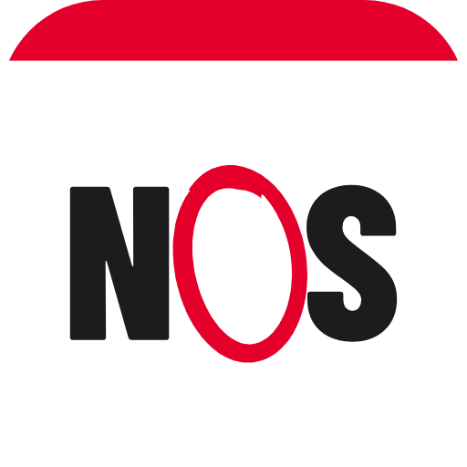
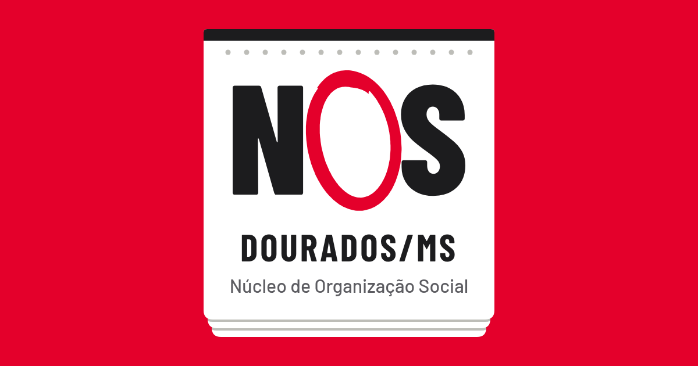

Marca NOS
NOS com o O circulado à mão, como se marca uma data na folhinha: as letras impressas em Barlow Condensed e o círculo de caneta. No papel, letras em grafite e círculo vermelho; no cartão vermelho, tudo branco.
Dourados/MS
Núcleo de Organização Social
Dourados/MS
Núcleo de Organização Social

Ícone do app
Favicons (48, 32, 16)

Prévia do link (WhatsApp)